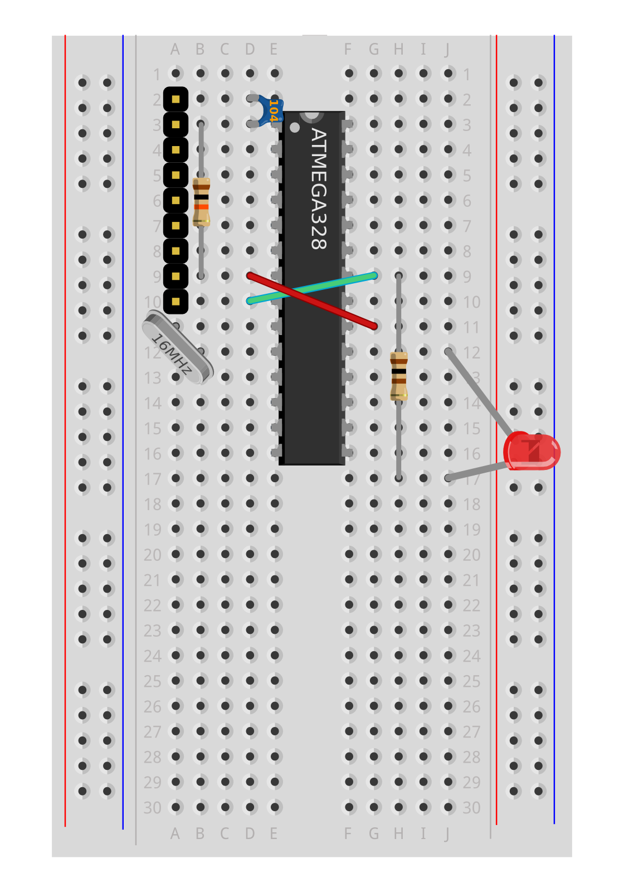
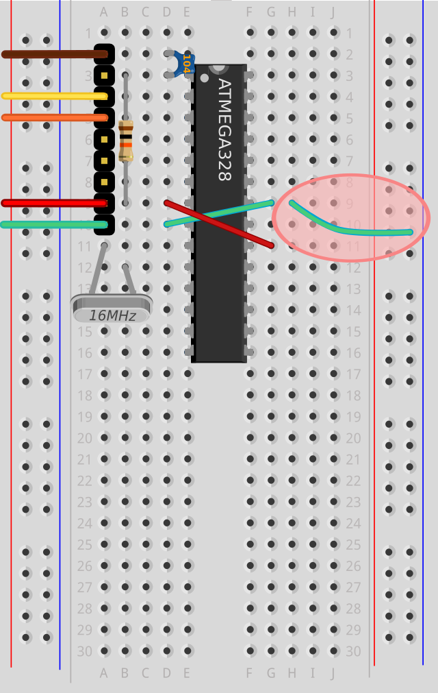
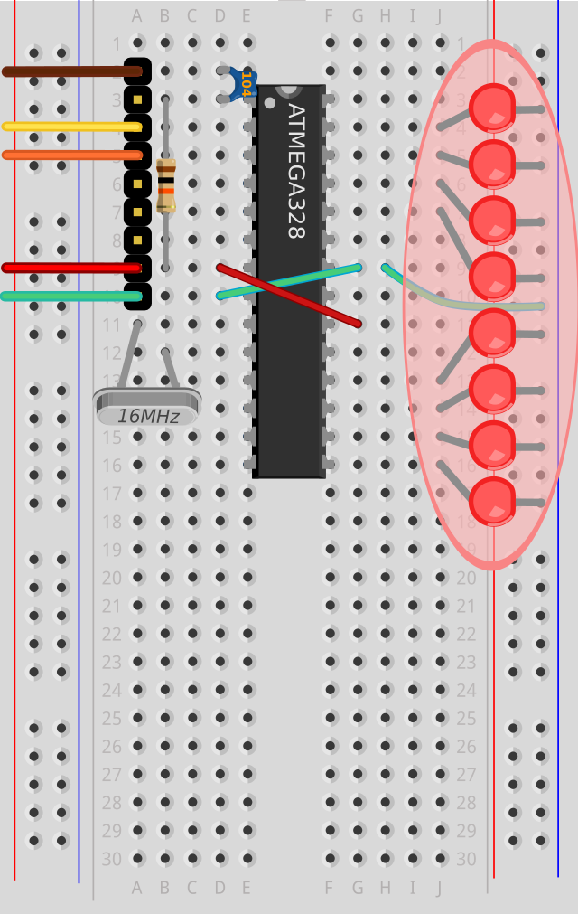
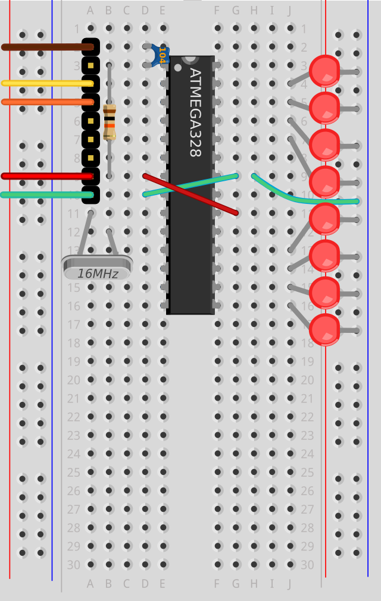

MENU
Project
Introducing It
Wiring It
Programming It
Debugging It
Teaching It
Buying It
Other Projects
...blink an LED
...paint with light
...make a Banana Piano
...test your melody memory
...invent a new Clock
Kits
How to Choose
Product List
Shrimp Bundle
Persistence of Vision
Conductive Keyboard
'Simon' Memory Game
Alarm Clock
Teaching
Workshops
Resources
Testimonials
Special Offers
More
About Us
Contributing
Licensing
Feedback
Contact
Prev
1
2
3
4
5
6
7
Next
Wiring Persistence of Vision
Getting started
Remove surplus parts
Right-hand Ground Rail
Light Emitting Diodes
Upload
POV Demo
Wiring Persistence of Vision
Getting started

Remove surplus parts
Right-hand Ground Rail

Light Emitting Diodes

Upload

POV Demo